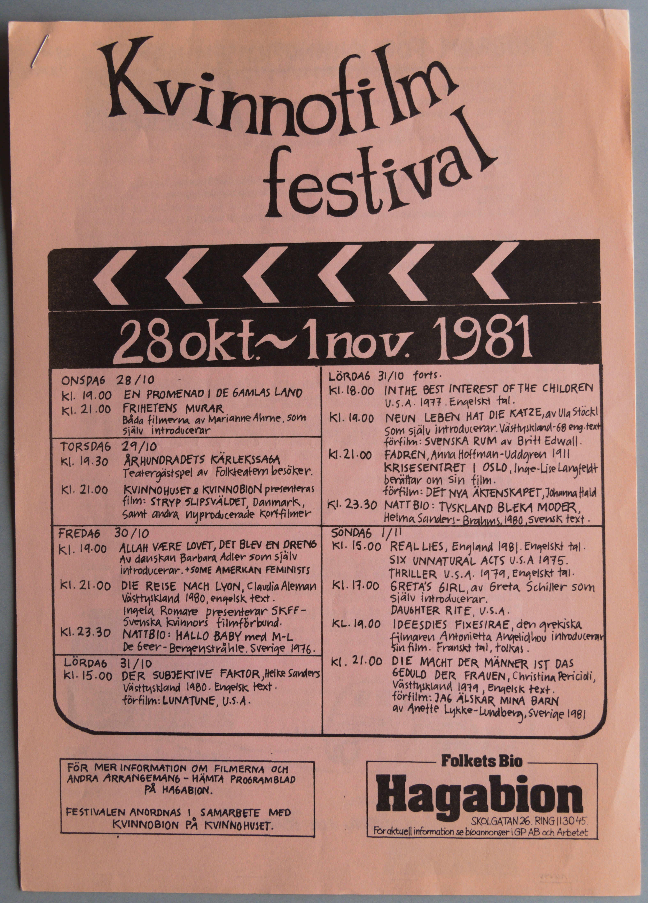
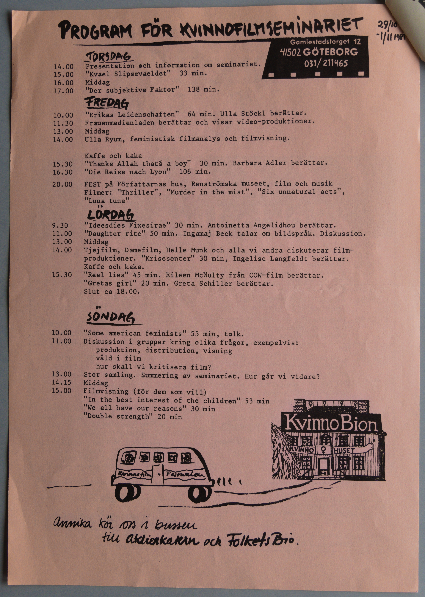
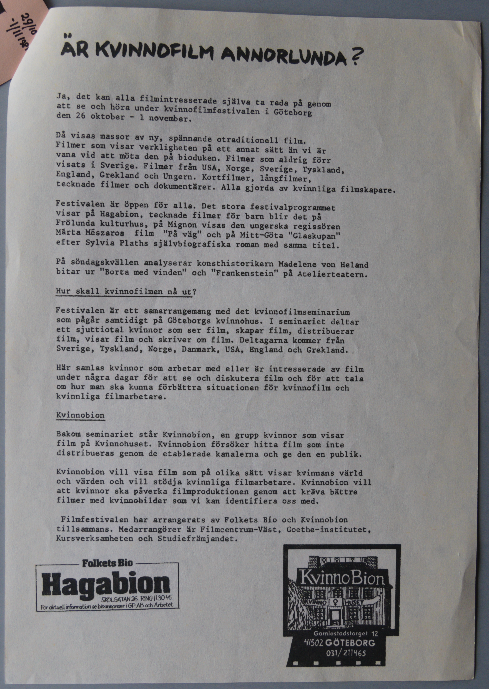
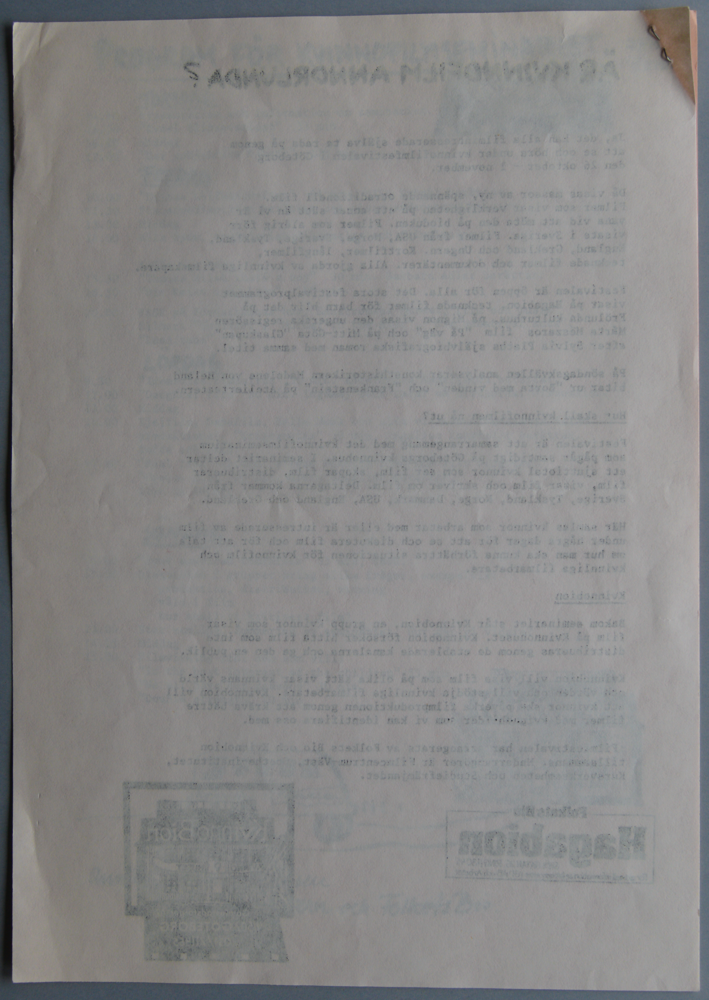

Digitiserad version av program från kvinnofilmfestival
vid KvinnoBion år 1981
Faksimil
Första sida av programblad
Transkription
festival 28 okt.~1 nov. 1981
ONSDAG
28/10
kl. 19.00 EN PROMENAD I DE GAMLAS LAND
kl. 21.00 FRIHETENS MURAR
Båda filmerna av Marianne Ahrne, som
själv introducerar
TORSDAG 29/10
kl. 19.30 ÅRHUNDRADETS
KÄRLEKSSAGA
Teatergästspel av Folkteatern besöker.
kl.
21.00 KVINNOHUSET o KvinnoBion presenteras
film: STRYP SLIPSVÄLDET, Danmark,
samt andra nyproducerade
kortfilmer
FREDAG 30/10
kl. 19.00 ALLAH VÆRE LOVET,
DET BLEV EN DRENG
Av danskan Barbara Adler som själv
introducerar. +SOME
AMERICAN FEMINISTS
kl. 21.00 DIE REISE NACH LYON, Claudia Aleman
Vättyskland 1980, engelsk text.
Ingela Romare presenterar SKFF –
Svenska kvinnors filmförbund.
kl. 23.30 NATTBIO: HALLO
BABY med M-L
De Geer-Bergenstråhle. Sverige 1976.
LÖRDAG 31/10
kl. 15.00 DER SUBJEKTIVE FAKTOR, Helke
Sanders
Västtyskland 1980. Engelsk text.
förfilm:
LUNATUNE, U.S.A.
FÖR MER INFORMATION OM FILMERNA OCH
ANDRA ARRANGEMANG – HÄMTA
PROGRAMBLAD
PÅ HAGABION.
FESTIVALEN ANORDNAS I SAMARBETE MED
KvinnoBion PÅ KVINNOHUSET.
LÖRDAG 31/10 forts.
kl. 18.00
IN THE BEST INTEREST OF THE CHILDREN
U.S.A. 1977. Engelskt tal.
kl. 19.00 NEUN LEBEN HAT
DIE KATZE, av Ula Stöckl
som själv introducerar.
Västtyskland-68 eng.text
förfilm: SVENSKA RUM av
Britt Edwall.
kl. 21.00 FADREN, Anna Hoffman-Uddgren
1911
KRISESENTRET
KRISESENTERET I OSLO, Inge-Lise Langfeldt
berättar om sin film.
förfilm: DET NYA ÄKTENSKAPET,
Johanna Hald
kl. 23.30 NATTBIO: TYSKLAND BLEKA
MODER,
Helma Sanders-Brahms, 1980, svensk text.
SÖNDAG 1/11
kl. 15.00 REAL LIES, England 1981.
Engelskt tal.
SIX UNNATURAL ACTS U.S.A 1975.
THRILLER U.S.A. 1979, Engelskt tal.
kl. 17.00
GRETA’S GIRL
GIRLS
, av Greta Schiller som
själv introducerar.
DAUGHTER RITE, U.S.A.
kl. 19.00
IDEESDIES FIXESIRAE
IDEES
FIXES/
DIES
IRAE
, den grekiska
filmaren Antonietta Angelidhou
Angelidi introducerar
sin film. Franskt tal, tolkas.
kl. 21.00 DIE MACHT DER MÄNNER IST DAS
DIE
GEDULD DER FRAUEN, Christina Pericioli,
Västtyskland 1979,
Engelsk text.
förfilm: JAG ÄLSKAR MINA BARN
av Anette Lykke-Lundberg, Sverige 1981
Folkets Bio
Hagabion
SKOLGATAN 26. RING 113045.
För
aktuell information se bioannonser i GP AB och Arbetet
Faksimil
Andra sida av programblad

Transkription
PROGRAM FÖR KVINNOFILMSEMINARIET 29/10
-1/11 1981
-1/11 1981
Gamlestadstorget 12
41502 GÖTEBORG
031/ 211465
TORSDAG
14.00 Presentation och information om seminariet.
15.00 "
Kvael
Kvæl Slipsevældet" 33 min.
16.00 Middag
17.00
"Der subjektive Faktor" 138 min.
FREDAG
10.00 "Erikas Leidenschaften" 64 min. Ulla
Ula
Stöckl berättar.
11.30 Frauenmedienladen berättar och
visar video-produktioner.
videoproduktioner.
13.00 Middag
14.00 Ulla Ryum, feministisk filmanalys och
filmvisning.
Kaffe och kaka
15.30 "Thanks Allah that’s a
boy" 30 min. Barbara Adler berättar.
16.30 "Die Reise nach Lyon"
106 min.
20.00 FEST på Författarnas hus, Renströmska museet,
film och musik
Filmer: "Thriller", "Murder in the mist", "Six
unnatural acts",
"Luna tune"
LÖRDAG
9.30 "IDEESDIES
FIXESIRAE"
"IDEES FIXES"/
"DIES IRAE" 30 min. Antoinetta Angelidhou
Angelidi berättar.
11.00 ”Daughter rite” 50 min.
Ingamaj Beck talar om bildspråk. Diskussion.
13.00 Middag
14.00 Tjejfilm, Damefilm, Helle Munk och alla vi andra
diskuterar film-
produktioner." "Krisesentret"
"Krisesenteret" 30 min, Ingelise
Inge-Lise Langfeldt berättar.
Kaffe och
kaka.
15.30 "Real lies" 45 min. Eileen McNulty från COW-film
berättar.
"Greta’s girl
girls" 20 min. Greta Schiller berättar.
Slut ca
18.00.
SÖNDAG
10.00 "Some american feminists" 55 min, tolk.
11.00
Diskussion i grupper kring olika frågor, exempelvis:
produktion, distribution, visning
våld i film
hur skall
vi kritisera film?
13.00 Stor samling. Summering av seminariet.
Hur går vi vidare?
14.15 Middag
15.00 Filmvisning (för dem
som vill)
"In the best interest of the children" 53 min
"We all have our reasons" 30 min
"Double strength" 20 min
Kvinnofilm • Festivalen
KvinnoBion
KVINNO ♀ HUSET
Annika kör oss i bussen
till Atelierteatern och Folkets Bio.
Faksimil
Tredje sida av programblad

Transkription
ÄR KVINNOFILM ANNORLUNDA?
Ja, det kan alla filmintresserade själva ta reda på genom
att
se och höra under kvinnofilmfestivalen i Göteborg
den 26
oktober – 1 november.
Då visas massor av ny, spännande otraditionell film.
Filmer
som visar verkligheten på ett annat sätt än vi är
vana vid att
möta den på bioduken. Filmer som aldrig förr
visats i Sverige.
Filmer från USA, Norge, Sverige, Tyskland,
England, Grekland
och Ungern. Kortfilmer, långfilmer,
tecknade filmer och
dokumentärer. Alla gjorda av kvinnliga filmskapare.
Festivalen är öppen för alla. Det stora festivalprogrammet
visar
visas på Hagabion, tecknade filmer för barn blir det på
Frölunda kulturhus, på Mignon visas den ungerska regissören
Márta Mészaros
Mészáros film ”På väg” och på Mitt-Göta ”Glaskupan”
efter Sylvia Plaths självbiografiska roman med samma titel.
På söndagskvällen analyserar konsthistorikern Madelene von Heland
bitar ur ”Borta med vinden” och ”Frankenstein” på
Atelierteatern.
Hur skall kvinnofilmen nå ut?
Festivalen är ett samarrangemang med det kvinnofilmseminarium
som pågår samtidigt på Göteborgs kvinnohus. I seminariet deltar
ett sjuttiotal kvinnor som ser film, skapar film, distribuerar
film, visar film och skriver om film. Deltagarna kommer från
Sverige, Tyskland, Norge, Danmark, USA, England och Grekland.
Här samlas kvinnor som arbetar med eller är intresserade av film
under några dagar för att se och diskutera film och för att
tala
om hur man ska kunna förbättra situationen för kvinnofilm
och
kvinnliga filmarbetare.
KvinnoBion
Bakom seminariet står KvinnoBion, en grupp kvinnor som visar
film på Kvinnohuset. KvinnoBion försöker hitta film som inte
distribueras genom de etablerade kanalerna och ge den en
publik.
KvinnoBion vill visa film som på olika sätt visar kvinnans värld
och värden och vill stödja kvinnliga filmarbetare. KvinnoBion
vill
att kvinnor ska påverka filmproduktionen genom att kräva
bättre
filmer med kvinnobilder som vi kan identifiera oss med.
Filmfestivalen har arrangerats av Folkets Bio och KvinnoBion
tillsammans. Medarrangörer är Filmcentrum-Väst, Goethe-institutet,
Kursverksamheten och Studiefrämjandet.
Folkets Bio
Hagabion
SKOLGATAN 26. RING 113045
För aktuell information se bioannonser i GP AB och Arbetet
KvinnoBion
KVINNO ♀ HUSET
Gamlestadstorget 12
415 02 GÖTEBORG
031/ 211465
Faksimil
Baksida av tredje sida av programblad
